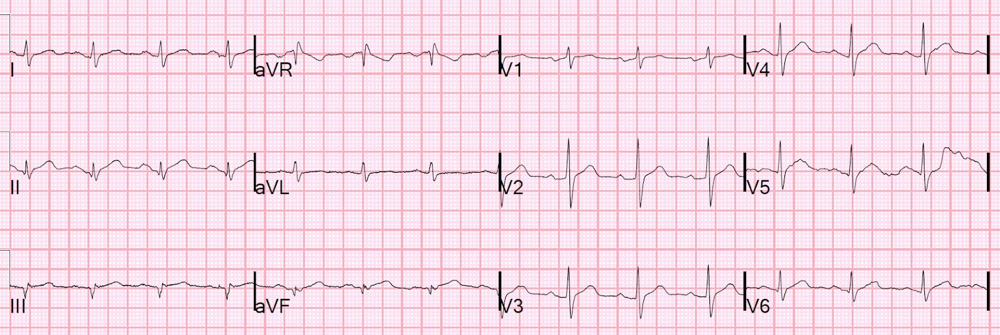
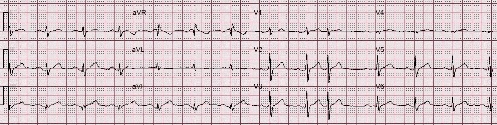
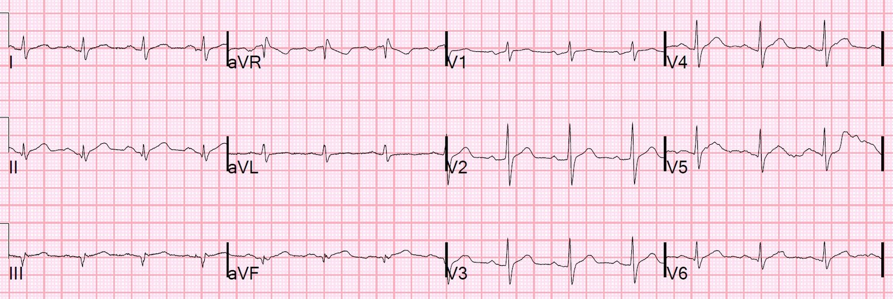
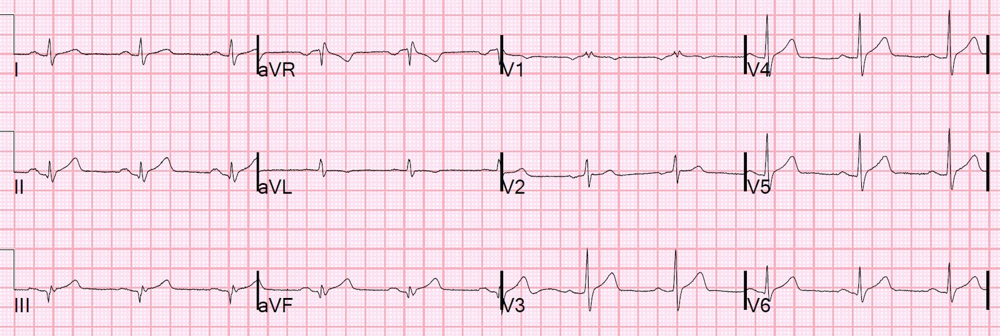
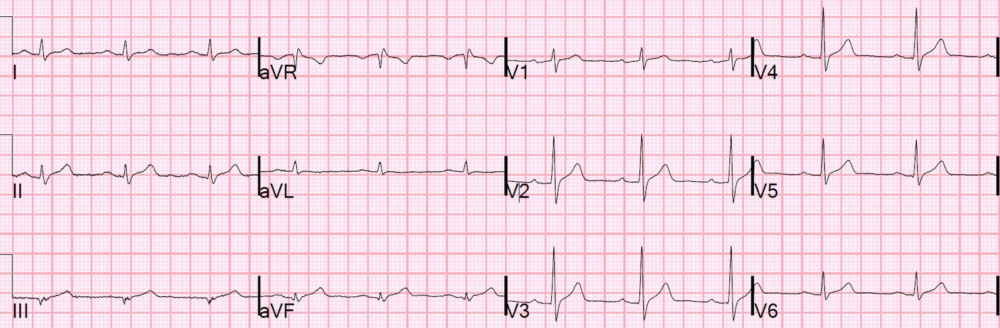
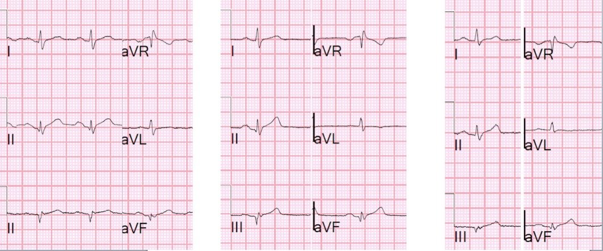
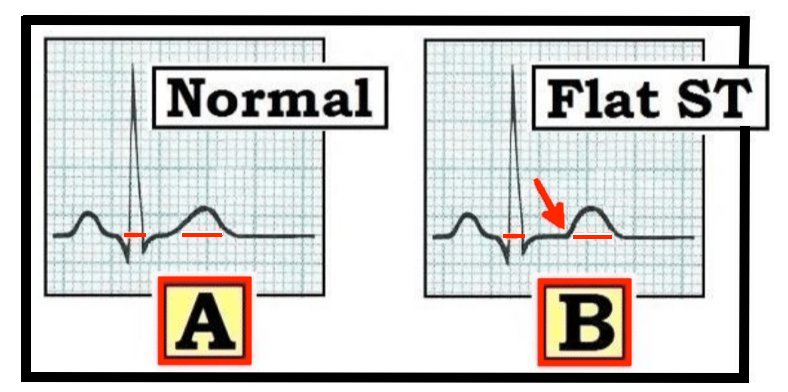
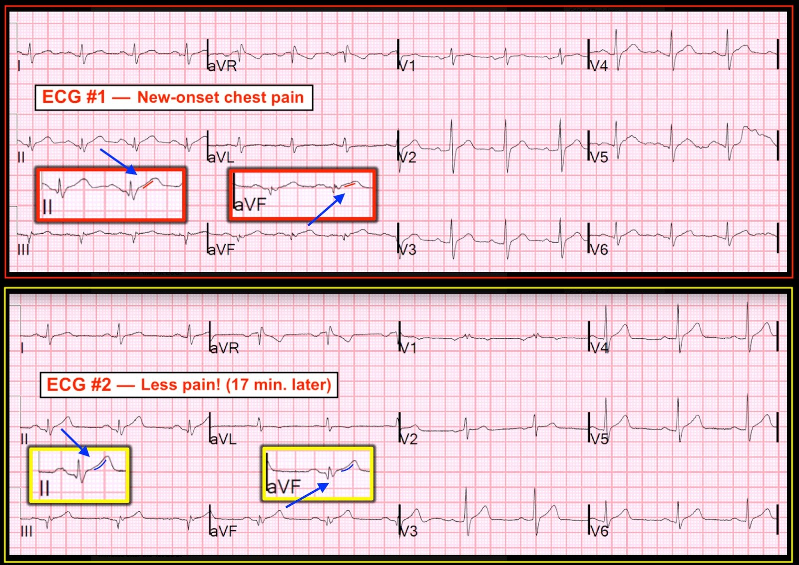

27/10/2018 — Các bác sĩ nội trú của chúng tôi đang ngày càng giỏi việc này.
Bản dịch tiếng Việt của bài "Our residents are getting really good at this." – Dr. Smith’s ECG Blog. Giữ nguyên toàn bộ 10 hình ảnh của bản gốc.
Tôi được nhờ xem điện tâm đồ này ở một bệnh nhân khởi phát cấp tính buồn nôn và nôn 30 phút, có lẽ kèm chút khó chịu ở ngực:
Điện tâm đồ đầu tiên tại khoa cấp cứu (ED):


Trong nghiên cứu của chúng tôi về nhồi máu cơ tim thành dưới, 99% có ST chênh xuống ở một mức độ nào đó tại chuyển đạo aVL:
https://www.sciencedirect.com/science/article/pii/S0735675715008189 (bài báo: ST chênh xuống ở aVL trong nhồi máu cơ tim thành dưới)
Ca bệnh như sau:
Một bệnh nhân 60 mấy tuổi gọi 911 vì khởi phát cấp tính vã mồ hôi, nôn và cả đau ngực.
3 điện tâm đồ trước viện đã được ghi. Tất cả đều giống hệt nhau. Đây là điện tâm đồ thứ 3:


Đây lại là điện tâm đồ đầu tiên tại khoa cấp cứu (triệu chứng đã 30 phút):


Điện tâm đồ này được một trong những bác sĩ nội trú năm thứ 2 tuyệt vời của chúng tôi, BG TenBrink xem. Và cậu ấy rất nghi ngờ nhồi máu cơ tim cấp. Các bác sĩ nội trú đang ngày càng rất giỏi việc này!
Vì vậy cậu ấy đưa nó cho một giảng viên trẻ của chúng tôi, Nick Simpson. Nick bị thuyết phục.
Theo mô tả, bệnh nhân “trông rất tệ và vẫn tiếp tục đổ mồ hôi nhỏ giọt.” Ông có “buồn nôn và nôn nhiều lần.” Ông “da lạnh ẩm và vã mồ hôi khi nhân viên cấp cứu ngoài viện tiếp cận.” Ông không được dùng aspirin hay nitroglycerin trước viện, và “ông không than đau ngực hay khó thở.”
Tại khoa cấp cứu, bệnh nhân bắt đầu than đau ngực giữa xương ức, khởi phát khi đang ở khoa cấp cứu. Ông vẫn buồn nôn và vã mồ hôi. Ông phủ nhận tiền sử bệnh tim. Chưa từng bị nhồi máu cơ tim trước đây.
Cơn đau lúc có lúc không tại khoa cấp cứu, và một điện tâm đồ khác, thứ 2, được ghi khi không đau, hoặc ít nhất là đau ít hơn nhiều, 17 phút sau điện tâm đồ thứ 1:


Huyết áp của bệnh nhân tụt vài lần xuống khoảng giữa 80
Phòng thông tim (cath lab) được kích hoạt. Kết quả:
RCA là mạch có khẩu kính trung bình, xuất phát thấp và ra trước.
Ghi nhận hẹp 80% dạng mờ (hazy) ở đoạn xa của mạch.
Tổn thương ở RCA đoạn xa: hẹp 80%, dài 15 mm, giảm xuống 0%. Trước thủ thuật ghi nhận dòng chảy TIMI III. Sau thủ thuật có dòng chảy TIMI III. Có dòng chảy phía xa (run off) tốt. Tổn thương được chẩn đoán là tổn thương nguy cơ thấp. Tổn thương dạng ống và lệch tâm. Tổn thương có bằng chứng hiện diện huyết khối, với bờ không đều, gập góc nhẹ và xoắn vặn nhẹ. Mảng xơ vữa của tổn thương bị nứt vỡ.
(Các) tổn thương thủ phạm:
Hẹp 70-80% dạng mờ (hazy) ở RCA đoạn xa (dRCA)
Nhận định:
STEMI thành dưới với thủ phạm là RCA, mạch máu đã tái thông trước khi chụp mạch (tức là tái tưới máu tự phát, thể hiện qua sự cải thiện trên điện tâm đồ và hết đau)
PCI thành công với stent phủ thuốc (DES) Synergy 2.5 x 16 mm; kết quả chụp mạch rất tốt
Đây là điện tâm đồ sáng hôm sau:


Đây là cả 3 điện tâm đồ đặt cạnh nhau:
Điện tâm đồ đầu tiên Điện tâm đồ thứ 2, hết đau Điện tâm đồ thứ 3, sau thông tim


Troponin I đầu tiên dưới giới hạn phát hiện (0.010 ng/mL), và tất cả các lần troponin sau đó cũng vậy!
Siêu âm tim không thấy rối loạn vận động thành và phân suất tống máu (EF) bình thường.
Như vậy, bệnh nhân được loại trừ nhồi máu cơ tim.
Vậy làm sao chúng ta biết thực sự đã có hội chứng vành cấp?
1. Chụp mạch vành cho thấy một tổn thương mờ (hazy) và mảng xơ vữa bị nứt vỡ
2. “Tiêu chuẩn vàng” (tiêu chuẩn tham chiếu) là sự tiến triển của điện tâm đồ. Nếu ST chênh lên và/hoặc sóng T lớn là do thiếu máu cục bộ, thì khi thiếu máu cục bộ không còn (và nó luôn biến mất vào một lúc nào đó — thiếu máu cục bộ không phải là một tình trạng mạn tính), ST chênh lên sẽ giảm và/hoặc sóng T bớt lớn; nếu chúng KHÔNG do thiếu máu cục bộ, chúng sẽ không thay đổi.
Ở đây ta thấy sự tiến triển: khi bệnh nhân hết đau, sóng T trở nên bớt “béo”. Chụp mạch có dòng chảy TIMI-3, tương ứng với điện tâm đồ đang hồi phục.
Kết luận:
Bệnh nhân này được điều trị nhanh đến mức không có nhồi máu thực sự. Tái tưới máu tự phát chắc chắn đã góp phần.
Vì vậy đây thực sự là một ca khác của đau thắt ngực không ổn định (Unstable Angina).
Đây là thêm các ca đau thắt ngực không ổn định

===================================
Bình luận của KEN GRAUER, MD (27/10/2018):
===================================
Một ca xuất sắc của Dr. Smith với việc nhận ra và điều trị kịp thời hội chứng vành cấp, dẫn đến thông tim nhanh chóng trước khi xảy ra bất kỳ nhồi máu thực sự nào. Bệnh nhân may mắn ở chỗ “tổn thương thủ phạm” hẹp 80% ở RCA đã tự phát tái tưới máu. Tổn thương được đặt stent với hy vọng ngăn ngừa một biến cố trong tương lai.
- Tôi tập trung bình luận vào định nghĩa trên điện tâm đồ của một đoạn ST “bình thường” (Hình 1) — và vào một số chi tiết tinh tế bổ sung liên quan đến việc đọc 2 bản ghi đầu tiên trong ca này (Hình 2):


========================-
Nhận biết Thay đổi Đoạn ST Tinh tế — Các chuyên gia điện tâm đồ chưa đạt được đồng thuận về định nghĩa một đoạn ST bình thường. Phần lớn điều này liên quan đến ngữ nghĩa — vì những bất thường ST-T nhỏ trong bối cảnh không cấp tính thường không cung cấp gì hơn ngoài một gợi ý không đặc hiệu về các nguyên nhân có thể. Dù vậy — tôi cho rằng việc tập trung rèn luyện để nhận biết ngay cả những bất thường tối thiểu là quan trọng, vì: i) sẽ tốt nếu để những người khác đọc kết quả diễn giải của chúng ta biết rằng chúng ta đã thấy bất thường đang bàn, ngay cả khi có thể ta không nghĩ nó quan trọng về mặt lâm sàng với ca đang xét; và, ii) trong bối cảnh cấp tính — ngay cả những bất thường ST-T tinh tế cũng có thể rất quan trọng!
- Sóng ST-T ở Ô A của Hình 1 là bình thường. Lưu ý đường viền trơn mượt tại điểm chuyển tiếp giữa phần cuối sóng S và phần đầu đoạn ST. Lưu ý một đường viền trơn mượt tương tự ở cuối đoạn ST và điểm bắt đầu nhánh lên của sóng T. Có một chút lõm hướng lên bình thường tại chỗ chuyển tiếp này giữa phần cuối đoạn ST và phần đầu sóng T.
- Ngược lại — Lưu ý góc nhọn ở Ô B tại điểm đoạn ST thẳng (dẹt) kết thúc và nhánh lên của sóng T bắt đầu (mũi tên ĐỎ). Dù phải thừa nhận là đang “chẻ sợi tóc làm tư” — sóng ST-T ở Ô B không bình thường. Thay vào đó — có ST thẳng đuỗn không đặc hiệu (tức là, mất đi sự chuyển tiếp trơn mượt giữa phần cuối đoạn ST và phần đầu nhánh lên sóng T).
- Tôi xin nhấn mạnh rằng trong bối cảnh không cấp tính, “ST thẳng đuỗn không đặc hiệu” — là một dấu hiệu mô tả. Nó không đặc hiệu. Nó có thể không có ý nghĩa gì — đặc biệt nếu chỉ thấy ở một chuyển đạo duy nhất. Hoặc, nó có thể gợi ý một vấn đề khác (tức là, rối loạn điện giải) — hoặc, nó có thể là một chỉ dấu không đặc hiệu của bệnh mạch vành nền.
- Mặt khác, trong bối cảnh cấp tính (tức là, ở bệnh nhân đau ngực mới khởi phát) — ngay cả những bất thường điện tâm đồ tinh tế, đặc biệt nếu hiện diện ở nhiều chuyển đạo — có thể cực kỳ quan trọng. Vì lý do này — nhận biết những thay đổi ST-T tinh tế là một kỹ năng thiết yếu mà các bác sĩ cấp cứu cần thành thạo.
=============================
Bây giờ hãy xem Hình 2 — trong đó chúng ta so sánh bản ghi tại khoa cấp cứu ban đầu (điện tâm đồ #1) ghi trong lúc đau ngực — với điện tâm đồ #2 ghi 17 phút sau đó, vào lúc đau ngực đã giảm nhiều. Để thuận tiện cho việc bàn luận các bất thường điện tâm đồ mà Dr. Smith đã nêu ở trên — tôi đã thêm các ảnh phóng to (trong các hình chữ nhật ĐỎ) cho 2 phức bộ đầu tiên ở chuyển đạo II và aVF của điện tâm đồ #1. Những thay đổi tương tự ở sóng ST-T cũng thấy ở chuyển đạo III.
- Ngoài ST chênh lên tại điểm J nhẹ-nhưng-có-thật, hãy lưu ý đoạn khởi đầu ST bị thẳng đuỗn. Hình dạng lõm hướng lên bình thường của đoạn ST (mà ta đã thấy ở Ô A của Hình 1) đã mất ở từng chuyển đạo thành dưới của điện tâm đồ #1.
- Ngược lại — hình dạng lõm hướng lên bình thường hơn của đoạn ST ở các chuyển đạo thành dưới đã trở lại ở điện tâm đồ #2 (như thể hiện trong các ảnh chèn hình chữ nhật VÀNG của chuyển đạo II và aVF). Nói rõ — sóng ST-T ở các chuyển đạo thành dưới của điện tâm đồ #2 hoàn toàn không bình thường (!) — nhưng rõ ràng có ít hơn tình trạng ST thẳng đuỗn — và giờ đây rõ ràng ta có thể thấy đoạn ST ở các chuyển đạo thành dưới có phần lõm hướng lên.


============================-
Các chi tiết tinh tế bổ sung về 2 điện tâm đồ liên tiếp ở Hình 2:
- Liệu bệnh nhân này có thể đã từng bị nhồi máu thành dưới trước đó không? Xét cho cùng — có các sóng Q ở thành dưới thực ra khá lớn nếu xét đến kích thước nhỏ của các phức bộ QRS ở các chuyển đạo thành dưới. Chúng ta được biết bệnh nhân “không có tiền sử nhồi máu” — và thông tim không gợi ý bất kỳ rối loạn vận động thành nào — nhưng với tình trạng hẹp RCA nền đáng kể được cho là có sẵn, cùng một đợt tắc cấp đã tự phát hồi phục — có lẽ một hoặc nhiều đợt tương tự đã xảy ra trong quá khứ?
- Điều này có liên quan — vì (như Dr. Smith đã nhấn mạnh trước đó) — rất bất thường khi tắc RCA cấp (với ST chênh lên ở thành dưới) mà không thấy thay đổi soi gương (reciprocal) ở chuyển đạo aVL. Hãy nhớ rằng chuyển đạo aVL ở điện tâm đồ #1 không “bình thường” (tức là, đoạn ST dẹt một cách bất thường) — nhưng không có ST chênh xuống. Liệu lý do có thể là “đường nền” của chuyển đạo aVL đã bất thường từ một biến cố trước đó?
- Có một thay đổi ở chuyển đạo aVL trên điện tâm đồ #2 — đó là giờ đây có sóng T đảo ngược cực-kỳ-tinh-tế-nhưng-có-thật. Điều này có lẽ là một biểu hiện khác của tình trạng tái tưới máu tự phát ở bệnh nhân này.
- Ở điện tâm đồ #1 — có vùng chuyển tiếp sớm ở chuyển đạo V2, với R = S ở chuyển đạo V1. Đây không phải là hình dạng bình thường ở chuyển đạo V1, nơi thường cho thấy âm ưu thế. Liệu những dấu hiệu này (tức là, R=S ở V1 & vùng chuyển tiếp sớm ở chuyển đạo V2) có thể có ý nghĩa tương tự như các sóng Q thành dưới, cụ thể là phản ánh một nhồi máu thành sau trước đó?
- Cuối cùng, lưu ý ở điện tâm đồ #2 rằng phức bộ QRS nhỏ xíu ở chuyển đạo V1 giờ biểu hiện dạng rsr’ — mà khi kết hợp với các sóng s tận hẹp ở chuyển đạo I và V6 thì gợi ý blốc nhánh phải không hoàn toàn (incomplete RBBB). Dù vậy — tôi nghi rằng lý do cho sự thay đổi hình dạng QRS ở chuyển đạo V1 nhiều khả năng là do đặt sai vị trí điện cực (quá cao) của V1 và V2 — vì sóng P ở V1 của điện tâm đồ #2 giờ âm hoàn toàn (trước đó nó hai pha ở điện tâm đồ #1); giờ đây sóng P ở V2 có một thành phần âm (sóng P dương hoàn toàn ở V2 của điện tâm đồ #1) — và các chuyển đạo từ V3 đến V6 gần như giống hệt nhau ở cả hai bản ghi (gợi ý một vấn đề kỹ thuật có thể là nguyên nhân của thay đổi ở V1 và V2).